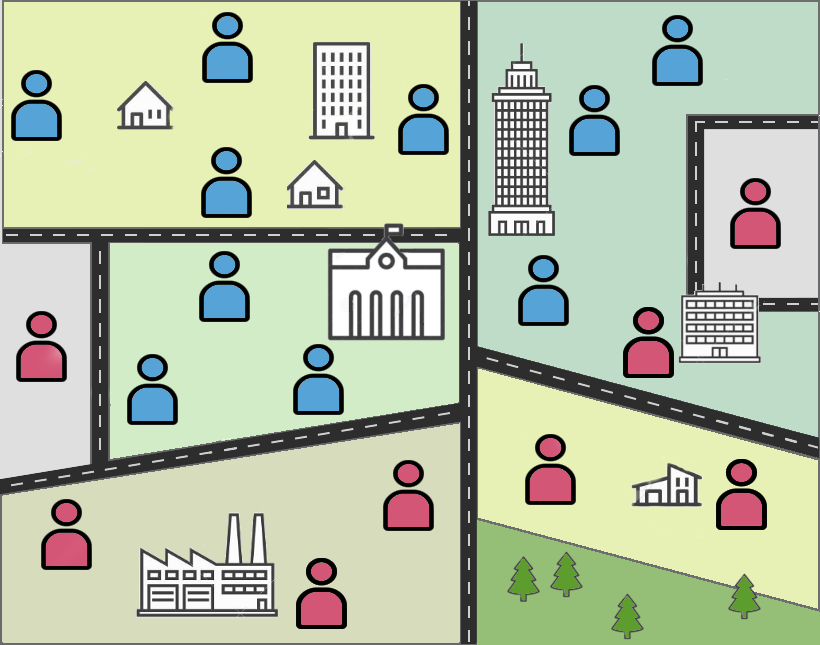

Success! Thank you for playing.
The vaccination should have trapped the disease but the anti-vaxxer allowed the disease thorugh. This was only a mini-game but hopefully it showed how games can engage people in serious matters.
Reset demo

Twitter: cmsTweets1